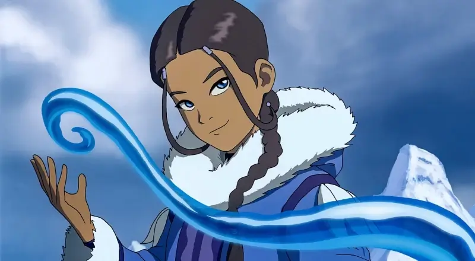
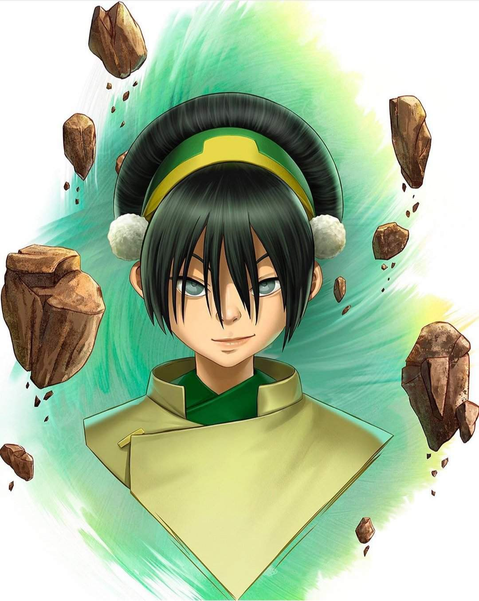
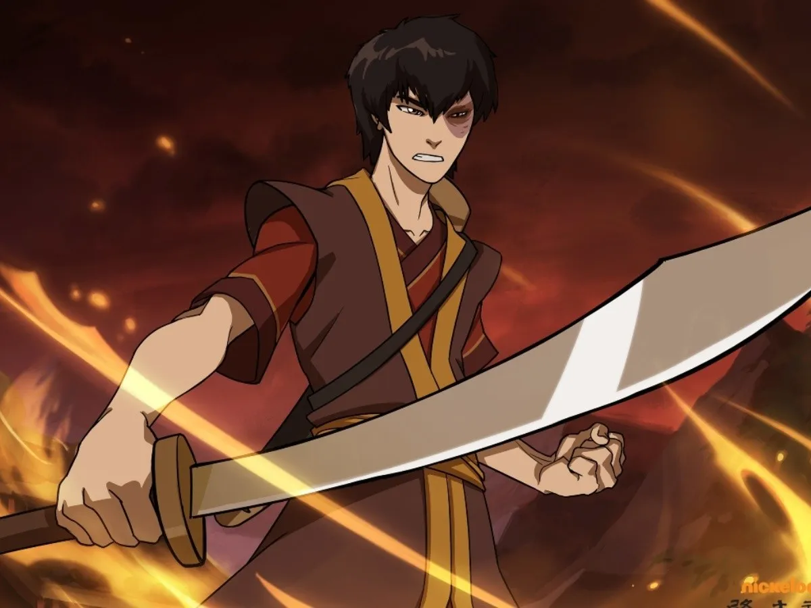

Solo el avatar puede controlar los 4 elementos y traer el equilibro al mundo
El Avatar La serie se centra en el viaje de Aang, de 12 años, el Avatar actual y último superviviente de su nación, los Nómadas del Aire, junto con sus amigos Sokka, Katara y más tarde Toph, mientras se esfuerzan por poner fin a la guerra de la Nación del Fuego contra las otras naciones del mundo. También sigue la historia de Zuko, el príncipe exiliado de la Nación del Fuego, que busca restaurar su honor perdido capturando a Aang, acompañado por su sabio tío Iroh, y más tarde, la de su ambiciosa hermana Azula. Conforme avanza la historia, Odín envía a diferentes dioses para poder asesinar a Loki y al fin deshacerse de él, con lo cual le causa varias desventuras y problemas al Dios desterrado en su lucha por volver a Asgard..
Aang
Protagonista de la serie AVATAR ANTERIOR
El gran maestro Es un niño de 112 años
Es el último maestro aire que queda, ya que fue el único sobreviviente del exterminio de los Nómadas del Aire que llevó a cabo el ejército del Señor del Fuego Sozin (quien empezó la guerra) cien años atrás para evitar que el próximo avatar naciera entre ellos (ese sería Aang). El destino de Aang como Avatar es dominar los cuatro elementos: el Aire, el Agua, la Tierra y el Fuego y restaurar el equilibrio del mundo. Como Avatar, es el puente entre el mundo Físico y el de los Espíritus. El Agua, la aprendió de Pakku (un maestro agua de la Tribu Agua del Norte) y Katara. La Tierra, la aprendió de Toph, y el fuego, lo aprendió de Zuko. Él está enamorado de Katara y trata varias veces de decirle lo que siente por ella, pero falla continuamente hasta su romántico beso en Ba Sing Se al final de la serie.

Korra
Protagonista de la sigueinte serie AVATAR ACTUAL
La rencarnación de Anng Avatar de la tribu Agua
Korra es un personaje de la serie animada de Nickelodeon La leyenda de Korra. Es la sucesora del Avatar Aang y portadora del espíritu de la Luz y la Paz, Raava. Nació en la tribu Agua del Sur y ya a los cuatro años utilizaba sin dominar en totalidad sus habilidades de control del agua, la tierra y el fuego.
Appa
Un bisonte amigo y animal guia del Avatar Anng
Personajes importantes
-

Katara
Katara es una Maestra Agua de catorce años de edad (es decir, que tiene la capacidad de controlar telekinéticamente agua y derivados) -
 Soka
Soka
Sokka era un guerrero adolescente de la Tribu Agua del Sur y el hijo del Jefe Hakoda y Kya. Tras la muerte de su madre y después de que su padre se marchara junto con todos los demás hombres adultos de su tribu para luchar en la Guerra de los Cien Años, Sokka fue criado por su abuela, Kanna, junto a su hermana menor Katara. -

Toph
Toph Beifong es un personaje ficticio de la serie de televisión animada Avatar: La Leyenda de Aang y La Leyenda de Korra de Nickelodeon, con la voz de Jessie Flower en la serie original y Kate Higgins y Philece Sampler en la serie secuela. -

Zuko
El Príncipe (más tarde Señor del Fuego) Zuko, también conocido como el Espíritu Azul, es un personaje ficticio de la serie de televisión animada de Nickelodeon Avatar: la leyenda de Aang. Creado y diseñado por Michael Dante DiMartino y Bryan Konietzko, el personaje tiene la voz de Dante Basco y Bruce Davison en La leyenda de Korra, e interpretada por Dev Patel en la película de 2010 de M. Night Shyamalan The Last Airbender.
Otros personajes
Iroh Hakoda Piandao Suki Monje Gyatso Hama Azula Zhao Jet Ozai Wan shi Tong El Duque Ty Lee Roku
Logos de los 4 elementos


Follow Me
Subscribe
Enter your e-mail below and get notified on the latest blog posts.